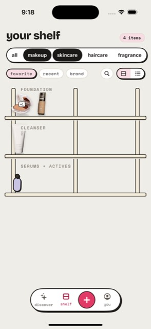
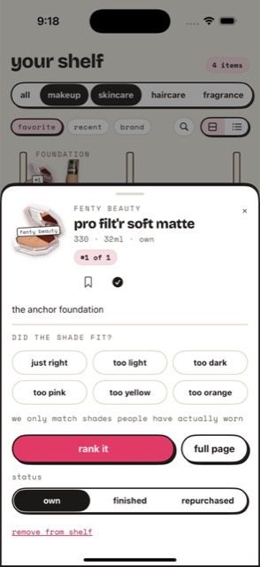

glossed is a journal for what you actually own and wear — logged in seconds, shelved by category, and ranked the way you really decide: one honest comparison at a time.

search, scan a barcode, or snap it. every product lands as the exact shade and size you own — a foundation is not one thing, it's 40 shades, and yours is the one that matters.
no ten-point scales. two products, one question — which one, honestly? a handful of face-offs and your category has an order you'd actually defend.
every claim carries its number: "n = 12 people wear this exact shade." if the data isn't there, glossed says nothing — a missing number is never dressed up as a zero.
a 4.3 tells you nothing: whose skin, what shade, how long, compared to what? glossed replaces the star with three honest primitives:

glossed is in active development. TestFlight opens when the shelf is ready for company.